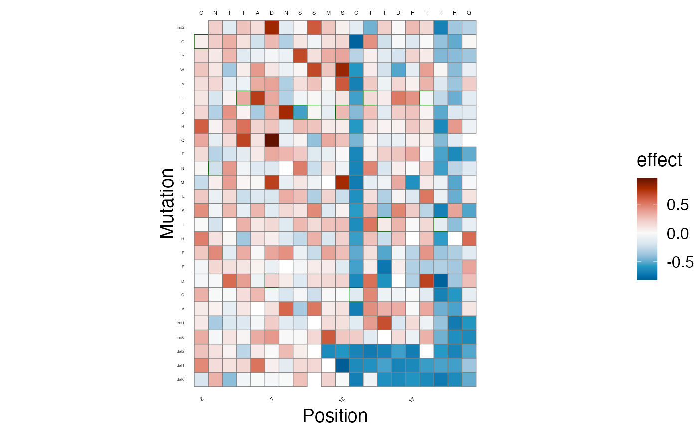

Overview
Lilace is a tool for scoring FACS-based DMS experiments with uncertainty quantification. It takes in a negative control group (usually synonymous variants) and scores each variant relative to the negative control group.
The standard workflow is:
- Import data into Lilace format
- Normalize to cell sorting percentages (if available)
- Run Lilace. On a full length protein, Lilace usually takes a few hours to run (see paper supplement for more details)
- Analyze Lilace output
This notebook shows an example run of Lilace from installation to analysis on a toy dataset. We provide functions to load counts into Lilace’s input format (step 1), normalize counts to cell sorting proportions (step 2), run Lilace (step 3), and plot the results (step 4). By default, Lilace incorporates variance in the negative control scores into effect size uncertainty (standard errors) and makes use of similar effects at a position to improve estimation. Both of these behaviors can optionally be turned off when running Lilace.
Installation
Lilace is built using stan and interacts with
CmdStan using the package cmdstanr. This
requires C++ compilation. The compiler requirements can be seen at stan-dev.
If you run into issues with installation, please ensure your gcc version
is > 5.
First, we install cmdstanr. We recommend running this in
a fresh R session or restarting your current session.
install.packages("cmdstanr", repos = c('https://stan-dev.r-universe.dev', getOption("repos")))Then, we use cmdstanr to install CmdStan.
This requires a working C++ toolchain and compiler.
library(cmdstanr)
install_cmdstan(cores = 2) # number of cores to use for installationWe can check the CmdStan version to verify correct
installation.
Now, we can install Lilace from github.
if (!requireNamespace("remotes", quietly = TRUE)) {
install.packages("remotes")
}
remotes::install_github("pimentellab/lilace")
library(lilace)Load input data
Next, we load in the toy dataset, which includes the first 20 positions of a GPR68 screen from (https://www.cell.com/cell/fulltext/S0092-8674(24)01373-4). This data is provided with a standard installation of Lilace.
load(system.file("extdata", "gpr68_ph55_20pos.RData", package="lilace"))
head(dataset)## # A tibble: 6 × 14
## hgvs_exp hgvs position wildtype mutation type c_0 c_1 c_2 c_3 exp
## <chr> <chr> <dbl> <chr> <chr> <chr> <dbl> <dbl> <dbl> <dbl> <chr>
## 1 p.(G2A)_… p.(G… 2 G A miss… 118 146 215 260 ph55
## 2 p.(G2A)_… p.(G… 2 G A miss… 146 108 127 284 ph55
## 3 p.(G2A)_… p.(G… 2 G A miss… 144 55 106 134 ph55
## 4 p.(G2C)_… p.(G… 2 G C miss… 148 101 384 507 ph55
## 5 p.(G2C)_… p.(G… 2 G C miss… 203 201 307 616 ph55
## 6 p.(G2C)_… p.(G… 2 G C miss… 236 175 262 547 ph55
## # ℹ 3 more variables: rep <chr>, n_counts <dbl>, total_counts <dbl>We then put the data into a Lilace object using the
lilace_from_counts() function, which requires:
- variant identifier (e.g. hgvs), ensure this is unique for each variant
- mutation type (e.g. synonymous, missense)–this will be used to identify the negative controls
- residue position
- replicate information
- the FACS bin counts
- any metadata you wish to carry over into the final output.
# load from components
lilace_obj <- lilace_from_counts(variant_id=dataset$hgvs, mutation_type=dataset$type,
position=dataset$position, replicate=dataset$rep,
counts=dataset %>% select(starts_with("c_")),
metadata=dataset %>% select(wildtype, mutation, exp))
head(lilace_obj$data)## # A tibble: 6 × 13
## # Groups: variant [2]
## variant wildtype mutation exp type position rep c_0 c_1 c_2 c_3
## <chr> <chr> <chr> <chr> <chr> <dbl> <chr> <dbl> <dbl> <dbl> <dbl>
## 1 p.(G2A) G A ph55 missen… 2 R1 118 146 215 260
## 2 p.(G2A) G A ph55 missen… 2 R2 146 108 127 284
## 3 p.(G2A) G A ph55 missen… 2 R3 144 55 106 134
## 4 p.(G2C) G C ph55 missen… 2 R1 148 101 384 507
## 5 p.(G2C) G C ph55 missen… 2 R2 203 201 307 616
## 6 p.(G2C) G C ph55 missen… 2 R3 236 175 262 547
## # ℹ 2 more variables: n_counts <dbl>, total_counts <dbl>We also provide the functions lilace_from_enrich(),
which can load counts from enrich2’s output format, and
lilace_from_files(), which can load counts from separate
bin and replicate count files, but they may not generalize to all
dataset formats. See the end of this vignette for an example call of
each.
Normalize to cell sorting proportions
FACS gating is often set to contain equal proportions of the overall
cell fluorescence distribution, but differences in bin PCR amplification
can lead to the over and under representation of certain bins in the
read counts. If this is the case, the data can be normalized to the
sorting proportions using the lilace_sorting_normalize()
function, which takes in a Lilace object and the proportions to
normalize to.
In this case the sort proportions don’t add up to 1, but that’s okay, they are scaled to add up to 1 internally.
# normalize to sorting proportions
GPR_FACS_trace_percent_55 <- c(0.2184, 0.1972, 0.1869, 0.1236)
lilace_obj <- lilace_sorting_normalize(lilace_obj, GPR_FACS_trace_percent_55, rep_specific=F)## Warning in lilace_sorting_normalize(lilace_obj, GPR_FACS_trace_percent_55, :
## Sorting proportions sum up to 0.7261 instead of 1.
head(lilace_obj$normalized_data)## # A tibble: 6 × 13
## # Groups: variant [2]
## variant wildtype mutation exp type position rep c_0 c_1 c_2 c_3
## <chr> <chr> <chr> <chr> <chr> <dbl> <chr> <dbl> <dbl> <dbl> <dbl>
## 1 p.(G2A) G A ph55 missen… 2 R1 177 164 199 160
## 2 p.(G2A) G A ph55 missen… 2 R2 192 131 148 150
## 3 p.(G2A) G A ph55 missen… 2 R3 199 69 92 86
## 4 p.(G2C) G C ph55 missen… 2 R1 222 113 355 312
## 5 p.(G2C) G C ph55 missen… 2 R2 267 243 356 324
## 6 p.(G2C) G C ph55 missen… 2 R3 327 218 227 351
## # ℹ 2 more variables: n_counts <dbl>, total_counts <dbl>If we wish to normalize to replicate-specific sorting proportions, we can format it like the following. The replicate labels in the list (R1, R2, R3) should correspond to the labels used in the Lilace input.
# normalize to sorting proportions
GPR_FACS_trace_percent_55 <- list(R1=c(0.2184, 0.1972, 0.1869, 0.1236),
R2=c(0.2184, 0.1972, 0.1869, 0.1236),
R3=c(0.2184, 0.1972, 0.1869, 0.1236))
lilace_obj <- lilace_sorting_normalize(lilace_obj, GPR_FACS_trace_percent_55, rep_specific=T)## Warning in lilace_sorting_normalize(lilace_obj, GPR_FACS_trace_percent_55, :
## Sorting proportions sum up to 0.7261 instead of 1.
## Warning in lilace_sorting_normalize(lilace_obj, GPR_FACS_trace_percent_55, :
## Sorting proportions sum up to 0.7261 instead of 1.
## Warning in lilace_sorting_normalize(lilace_obj, GPR_FACS_trace_percent_55, :
## Sorting proportions sum up to 0.7261 instead of 1.
head(lilace_obj$normalized_data)## # A tibble: 6 × 13
## # Groups: variant [2]
## variant wildtype mutation exp type position rep c_0 c_1 c_2 c_3
## <chr> <chr> <chr> <chr> <chr> <dbl> <chr> <dbl> <dbl> <dbl> <dbl>
## 1 p.(G2A) G A ph55 missen… 2 R1 177 164 199 160
## 2 p.(G2A) G A ph55 missen… 2 R2 192 131 148 150
## 3 p.(G2A) G A ph55 missen… 2 R3 199 69 92 86
## 4 p.(G2C) G C ph55 missen… 2 R1 222 113 355 312
## 5 p.(G2C) G C ph55 missen… 2 R2 267 243 356 324
## 6 p.(G2C) G C ph55 missen… 2 R3 327 218 227 351
## # ℹ 2 more variables: n_counts <dbl>, total_counts <dbl>Run Lilace
Once, we are ready to run Lilace, we first specify an output directory where the output and model fitting logs will be saved.
output_dir <- "output"Then, we use the function lilace_fit_model() to run the
main Lilace algorithm. This should only take a few minutes on this
truncated dataset, but usually takes a few hours on a full length
protein.
By default, the negative controls will be identified by variants
labeled as synonymous in the lilace$data$type
column. This can be changed by setting the control_label
argument to a different value in the column. To disable the negative
control-based bias correction, set control_correction to
FALSE. To disable position-level grouping, set
use_positions to FALSE. We provide example
outputs for both of these options towards the end of the vignette.
lilace_obj <- lilace_fit_model(lilace_obj, output_dir, control_label="synonymous",
control_correction=T, use_positions=T, pseudocount=T,
n_parallel_chains=4)## Running MCMC with 4 parallel chains...
##
## Chain 1 Iteration: 1 / 2000 [ 0%] (Warmup)
## Chain 2 Iteration: 1 / 2000 [ 0%] (Warmup)
## Chain 3 Iteration: 1 / 2000 [ 0%] (Warmup)
## Chain 4 Iteration: 1 / 2000 [ 0%] (Warmup)
## Chain 4 Iteration: 250 / 2000 [ 12%] (Warmup)
## Chain 1 Iteration: 250 / 2000 [ 12%] (Warmup)
## Chain 2 Iteration: 250 / 2000 [ 12%] (Warmup)
## Chain 3 Iteration: 250 / 2000 [ 12%] (Warmup)
## Chain 4 Iteration: 500 / 2000 [ 25%] (Warmup)
## Chain 1 Iteration: 500 / 2000 [ 25%] (Warmup)
## Chain 2 Iteration: 500 / 2000 [ 25%] (Warmup)
## Chain 3 Iteration: 500 / 2000 [ 25%] (Warmup)
## Chain 4 Iteration: 750 / 2000 [ 37%] (Warmup)
## Chain 1 Iteration: 750 / 2000 [ 37%] (Warmup)
## Chain 2 Iteration: 750 / 2000 [ 37%] (Warmup)
## Chain 3 Iteration: 750 / 2000 [ 37%] (Warmup)
## Chain 4 Iteration: 1000 / 2000 [ 50%] (Warmup)
## Chain 4 Iteration: 1001 / 2000 [ 50%] (Sampling)
## Chain 2 Iteration: 1000 / 2000 [ 50%] (Warmup)
## Chain 2 Iteration: 1001 / 2000 [ 50%] (Sampling)
## Chain 1 Iteration: 1000 / 2000 [ 50%] (Warmup)
## Chain 1 Iteration: 1001 / 2000 [ 50%] (Sampling)
## Chain 3 Iteration: 1000 / 2000 [ 50%] (Warmup)
## Chain 3 Iteration: 1001 / 2000 [ 50%] (Sampling)
## Chain 4 Iteration: 1250 / 2000 [ 62%] (Sampling)
## Chain 1 Iteration: 1250 / 2000 [ 62%] (Sampling)
## Chain 3 Iteration: 1250 / 2000 [ 62%] (Sampling)
## Chain 4 Iteration: 1500 / 2000 [ 75%] (Sampling)
## Chain 1 Iteration: 1500 / 2000 [ 75%] (Sampling)
## Chain 2 Iteration: 1250 / 2000 [ 62%] (Sampling)
## Chain 3 Iteration: 1500 / 2000 [ 75%] (Sampling)
## Chain 4 Iteration: 1750 / 2000 [ 87%] (Sampling)
## Chain 1 Iteration: 1750 / 2000 [ 87%] (Sampling)
## Chain 3 Iteration: 1750 / 2000 [ 87%] (Sampling)
## Chain 4 Iteration: 2000 / 2000 [100%] (Sampling)
## Chain 4 finished in 90.4 seconds.
## Chain 1 Iteration: 2000 / 2000 [100%] (Sampling)
## Chain 1 finished in 92.5 seconds.
## Chain 3 Iteration: 2000 / 2000 [100%] (Sampling)
## Chain 3 finished in 92.9 seconds.
## Chain 2 Iteration: 1500 / 2000 [ 75%] (Sampling)
## Chain 2 Iteration: 1750 / 2000 [ 87%] (Sampling)
## Chain 2 Iteration: 2000 / 2000 [100%] (Sampling)
## Chain 2 finished in 132.8 seconds.
##
## All 4 chains finished successfully.
## Mean chain execution time: 102.2 seconds.
## Total execution time: 132.9 seconds.Once it’s done running, Lilace saves the scores for each variant to
output/lilace_output/variant_scores.tsv. The scores
dataframe is also saved in lilace_obj$scores. The scores
are also combined with the input dataframe at
lilace_obj$fitted_data.
scores <- read_tsv("output/lilace_output/variant_scores.tsv", show_col_types = FALSE)
head(scores)## # A tibble: 6 × 12
## variant type wildtype mutation exp position effect effect_se lfsr
## <chr> <chr> <chr> <chr> <chr> <dbl> <dbl> <dbl> <dbl>
## 1 p.(G2del) dele… G del0 ph55 2 -0.0698 0.283 0.370
## 2 p.(G2_N3del) dele… G del1 ph55 2 0.345 0.280 0.0955
## 3 p.(G2_I4del) dele… G del2 ph55 2 0.222 0.278 0.214
## 4 p.(G2_N3insG) inse… G ins0 ph55 2 0.273 0.278 0.159
## 5 p.(G2_N3insGS) inse… G ins1 ph55 2 0.0989 0.273 0.366
## 6 p.(G2A) miss… G A ph55 2 0.111 0.282 0.356
## # ℹ 3 more variables: pos_mean <dbl>, pos_sd <dbl>, discovery05 <dbl>The effect column represents the estimated effect size /
score for a variant, while effect_se gives the standard
error. lfsr is the local false sign rate, which is a
Bayesian measure of significance analogous to a p-value. For example, a
default way to call discoveries would be to set a threshold of
lfsr < 0.05. We encode this in the
discovery05 column where a -1 indicates a
significant leftward shift in fluorescence, +1 a
significant rightward shift, and 0 is not significant.
pos_mean and pos_sd are the estimated
position-level mean and variance parameters–these parameters are only
included in the final score table if Lilace was run with
use_positions=T.
Plot results
To analyze the output of the model, we can first plot the score
distributions of the different mutation types using
lilace_score_density() and ensure they align with
expectations.
lilace_score_density(scores, output_dir, score.col="effect",
name="score_histogram", hist=T, scale.free=T)
We observe a substantial LOF mode for indels, a smaller one for missense mutations, and a distribution around zero for synonymous mutations.
Next, we plot the estimated scores on a heatmap.
lilace_score_heatmap(scores, output_dir, score.col="effect", name="score_heatmap",
x.text=4, seq.text=1.5, y.text=3)
As well as the discoveries, at a threshold of
lfsr < 0.05. Again, -1 indicates a significant leftward
shift in fluorescence, +1 a rightward shift, and 0 is not
significant.
lilace_score_heatmap(scores, output_dir, score.col="discovery05", name="discovery05_heatmap",
x.text=4, seq.text=1.5, y.text=3)
From here on, further analysis can be done, such as mapping to protein structure and qualitatively analyzing the results.
Example runs without negative control correction or position hierarchy
Without the negative control-based bias correction
Without the negative control-based bias correction, the effect size standard errors are smaller and more effects are called significant (at the cost of more false positives). You may want to run this in cases where variance in negative controls do not provide a good estimate of experimental uncertainty (e.g. only a single WT variant), but you still want Lilace scores for each variant. In this case, Lilace uncertainty estimates (effect standard errors) do not incorporate any notion of negative control variance, which may result in more false positives. (note: a control label column is still required as a reference set to score against)
# specify outpur dir
output_dir <- "output_no_nc_correction"
# run the model on data
fitted_data <- lilace_fit_model(lilace_obj, output_dir, control_label="synonymous",
control_correction=F)## Running MCMC with 4 parallel chains...
##
## Chain 1 Iteration: 1 / 2000 [ 0%] (Warmup)
## Chain 2 Iteration: 1 / 2000 [ 0%] (Warmup)
## Chain 3 Iteration: 1 / 2000 [ 0%] (Warmup)
## Chain 4 Iteration: 1 / 2000 [ 0%] (Warmup)
## Chain 2 Iteration: 250 / 2000 [ 12%] (Warmup)
## Chain 4 Iteration: 250 / 2000 [ 12%] (Warmup)
## Chain 3 Iteration: 250 / 2000 [ 12%] (Warmup)
## Chain 1 Iteration: 250 / 2000 [ 12%] (Warmup)
## Chain 4 Iteration: 500 / 2000 [ 25%] (Warmup)
## Chain 2 Iteration: 500 / 2000 [ 25%] (Warmup)
## Chain 3 Iteration: 500 / 2000 [ 25%] (Warmup)
## Chain 1 Iteration: 500 / 2000 [ 25%] (Warmup)
## Chain 4 Iteration: 750 / 2000 [ 37%] (Warmup)
## Chain 3 Iteration: 750 / 2000 [ 37%] (Warmup)
## Chain 2 Iteration: 750 / 2000 [ 37%] (Warmup)
## Chain 1 Iteration: 750 / 2000 [ 37%] (Warmup)
## Chain 4 Iteration: 1000 / 2000 [ 50%] (Warmup)
## Chain 4 Iteration: 1001 / 2000 [ 50%] (Sampling)
## Chain 2 Iteration: 1000 / 2000 [ 50%] (Warmup)
## Chain 2 Iteration: 1001 / 2000 [ 50%] (Sampling)
## Chain 3 Iteration: 1000 / 2000 [ 50%] (Warmup)
## Chain 3 Iteration: 1001 / 2000 [ 50%] (Sampling)
## Chain 1 Iteration: 1000 / 2000 [ 50%] (Warmup)
## Chain 1 Iteration: 1001 / 2000 [ 50%] (Sampling)
## Chain 4 Iteration: 1250 / 2000 [ 62%] (Sampling)
## Chain 2 Iteration: 1250 / 2000 [ 62%] (Sampling)
## Chain 1 Iteration: 1250 / 2000 [ 62%] (Sampling)
## Chain 4 Iteration: 1500 / 2000 [ 75%] (Sampling)
## Chain 2 Iteration: 1500 / 2000 [ 75%] (Sampling)
## Chain 1 Iteration: 1500 / 2000 [ 75%] (Sampling)
## Chain 3 Iteration: 1250 / 2000 [ 62%] (Sampling)
## Chain 4 Iteration: 1750 / 2000 [ 87%] (Sampling)
## Chain 2 Iteration: 1750 / 2000 [ 87%] (Sampling)
## Chain 1 Iteration: 1750 / 2000 [ 87%] (Sampling)
## Chain 4 Iteration: 2000 / 2000 [100%] (Sampling)
## Chain 4 finished in 90.1 seconds.
## Chain 2 Iteration: 2000 / 2000 [100%] (Sampling)
## Chain 2 finished in 91.8 seconds.
## Chain 1 Iteration: 2000 / 2000 [100%] (Sampling)
## Chain 1 finished in 93.3 seconds.
## Chain 3 Iteration: 1500 / 2000 [ 75%] (Sampling)
## Chain 3 Iteration: 1750 / 2000 [ 87%] (Sampling)
## Chain 3 Iteration: 2000 / 2000 [100%] (Sampling)
## Chain 3 finished in 132.6 seconds.
##
## All 4 chains finished successfully.
## Mean chain execution time: 102.0 seconds.
## Total execution time: 132.8 seconds.
# read scores file
scores <- read_tsv("output_no_nc_correction/lilace_output/variant_scores.tsv", show_col_types = FALSE)
print(head(scores))## # A tibble: 6 × 12
## variant type wildtype mutation exp position effect effect_se lfsr
## <chr> <chr> <chr> <chr> <chr> <dbl> <dbl> <dbl> <dbl>
## 1 p.(G2del) dele… G del0 ph55 2 -0.0638 0.125 0.307
## 2 p.(G2_N3del) dele… G del1 ph55 2 0.358 0.126 0.0025
## 3 p.(G2_I4del) dele… G del2 ph55 2 0.226 0.107 0.0168
## 4 p.(G2_N3insG) inse… G ins0 ph55 2 0.282 0.112 0.00675
## 5 p.(G2_N3insG… inse… G ins1 ph55 2 0.106 0.103 0.152
## 6 p.(G2A) miss… G A ph55 2 0.110 0.119 0.174
## # ℹ 3 more variables: pos_mean <dbl>, pos_sd <dbl>, discovery05 <dbl>
lilace_score_heatmap(scores, output_dir, score.col="effect", name="score_heatmap",
x.text=4, seq.text=1.5, y.text=3)
lilace_score_heatmap(scores, output_dir, score.col="discovery05", name="discovery05_heatmap",
x.text=4, seq.text=1.5, y.text=3)
Without the position hierarchy
Without using position effects to inform variant effect estimates, each effect size will be completely independent of the others at its position. You may want to run this if the data has more than a single residue mutation at a time or complete position independence is desired for downstream analysis (e.g. clinical classification that uses multiple effects at a position as a line of evidence).
# specify outpur dir
output_dir <- "output_nopos"
# run the model on data
fitted_data <- lilace_fit_model(lilace_obj, output_dir, control_label="synonymous",
use_positions=F)## Running MCMC with 4 parallel chains...
##
## Chain 1 Iteration: 1 / 2000 [ 0%] (Warmup)
## Chain 2 Iteration: 1 / 2000 [ 0%] (Warmup)
## Chain 3 Iteration: 1 / 2000 [ 0%] (Warmup)
## Chain 4 Iteration: 1 / 2000 [ 0%] (Warmup)
## Chain 3 Iteration: 250 / 2000 [ 12%] (Warmup)
## Chain 4 Iteration: 250 / 2000 [ 12%] (Warmup)
## Chain 2 Iteration: 250 / 2000 [ 12%] (Warmup)
## Chain 1 Iteration: 250 / 2000 [ 12%] (Warmup)
## Chain 3 Iteration: 500 / 2000 [ 25%] (Warmup)
## Chain 4 Iteration: 500 / 2000 [ 25%] (Warmup)
## Chain 2 Iteration: 500 / 2000 [ 25%] (Warmup)
## Chain 1 Iteration: 500 / 2000 [ 25%] (Warmup)
## Chain 3 Iteration: 750 / 2000 [ 37%] (Warmup)
## Chain 4 Iteration: 750 / 2000 [ 37%] (Warmup)
## Chain 2 Iteration: 750 / 2000 [ 37%] (Warmup)
## Chain 1 Iteration: 750 / 2000 [ 37%] (Warmup)
## Chain 3 Iteration: 1000 / 2000 [ 50%] (Warmup)
## Chain 3 Iteration: 1001 / 2000 [ 50%] (Sampling)
## Chain 4 Iteration: 1000 / 2000 [ 50%] (Warmup)
## Chain 4 Iteration: 1001 / 2000 [ 50%] (Sampling)
## Chain 2 Iteration: 1000 / 2000 [ 50%] (Warmup)
## Chain 2 Iteration: 1001 / 2000 [ 50%] (Sampling)
## Chain 1 Iteration: 1000 / 2000 [ 50%] (Warmup)
## Chain 1 Iteration: 1001 / 2000 [ 50%] (Sampling)
## Chain 3 Iteration: 1250 / 2000 [ 62%] (Sampling)
## Chain 4 Iteration: 1250 / 2000 [ 62%] (Sampling)
## Chain 2 Iteration: 1250 / 2000 [ 62%] (Sampling)
## Chain 1 Iteration: 1250 / 2000 [ 62%] (Sampling)
## Chain 3 Iteration: 1500 / 2000 [ 75%] (Sampling)
## Chain 4 Iteration: 1500 / 2000 [ 75%] (Sampling)
## Chain 2 Iteration: 1500 / 2000 [ 75%] (Sampling)
## Chain 1 Iteration: 1500 / 2000 [ 75%] (Sampling)
## Chain 3 Iteration: 1750 / 2000 [ 87%] (Sampling)
## Chain 4 Iteration: 1750 / 2000 [ 87%] (Sampling)
## Chain 2 Iteration: 1750 / 2000 [ 87%] (Sampling)
## Chain 1 Iteration: 1750 / 2000 [ 87%] (Sampling)
## Chain 3 Iteration: 2000 / 2000 [100%] (Sampling)
## Chain 3 finished in 92.0 seconds.
## Chain 4 Iteration: 2000 / 2000 [100%] (Sampling)
## Chain 4 finished in 92.6 seconds.
## Chain 2 Iteration: 2000 / 2000 [100%] (Sampling)
## Chain 2 finished in 93.5 seconds.
## Chain 1 Iteration: 2000 / 2000 [100%] (Sampling)
## Chain 1 finished in 94.1 seconds.
##
## All 4 chains finished successfully.
## Mean chain execution time: 93.1 seconds.
## Total execution time: 94.1 seconds.
# read scores file
scores <- read_tsv("output_nopos/lilace_output/variant_scores.tsv", show_col_types = FALSE)
print(head(scores))## # A tibble: 6 × 10
## variant type wildtype mutation exp position effect effect_se lfsr
## <chr> <chr> <chr> <chr> <chr> <dbl> <dbl> <dbl> <dbl>
## 1 p.(G2del) dele… G del0 ph55 2 -0.187 0.290 0.235
## 2 p.(G2_N3del) dele… G del1 ph55 2 0.452 0.298 0.0542
## 3 p.(G2_I4del) dele… G del2 ph55 2 0.245 0.293 0.195
## 4 p.(G2_N3insG) inse… G ins0 ph55 2 0.328 0.283 0.108
## 5 p.(G2_N3insGS) inse… G ins1 ph55 2 0.0849 0.284 0.394
## 6 p.(G2A) miss… G A ph55 2 0.0693 0.288 0.424
## # ℹ 1 more variable: discovery05 <dbl>
lilace_score_heatmap(scores, output_dir, score.col="effect", name="score_heatmap",
x.text=4, seq.text=1.5, y.text=3)
lilace_score_heatmap(scores, output_dir, score.col="discovery05", name="discovery05_heatmap",
x.text=4, seq.text=1.5, y.text=3)
View posterior samples
For convenience and advanced analysis, the posterior samples are
saved in lilace_output/posterior_samples.RData. They can be
analyzed further with the posterior package. Here is an
example of how to access them:
library(posterior)
draws <- readRDS("output/lilace_output/posterior_samples.RData")
posterior_samples <- posterior::as_draws_rvars(draws)
head(posterior::draws_of(posterior_samples$a))## [,1] [,2] [,3]
## 1 0.0130850 0.01033440 0.0219349
## 2 0.0118919 0.01305480 0.0219369
## 3 0.0161553 0.00783614 0.0250009
## 4 0.0177819 0.00515565 0.0211849
## 5 0.0206479 0.00637177 0.0244694
## 6 0.0221742 0.01094440 0.0206382Format input data from Enrich2 output format
This function expects data in the following format created through
processing counts with Enrich2. 
enrich_file <- system.file("extdata", "kir21_enrich_format.tsv", package="lilace")
lilace_obj_from_enrich <- lilace_from_enrich(enrich_file, pheno="abundance") # filtering to just the abundance phenotype## Formatting from enrich2 output. Synonymous mutations will be used for negative control-based bias correction. If this is not desirable, please input using the format_data() function.
head(lilace_obj_from_enrich$data)## # A tibble: 6 × 13
## # Groups: variant [2]
## variant position wildtype mutation type c_0 c_1 c_2 c_3 exp rep
## <chr> <dbl> <chr> <chr> <chr> <dbl> <dbl> <dbl> <dbl> <chr> <chr>
## 1 p.(A22A) 22 A A synon… 116 181 176 278 abun… R1
## 2 p.(A22A) 22 A A synon… 221 230 420 397 abun… R2
## 3 p.(A22A) 22 A A synon… 94 133 119 257 abun… R4
## 4 p.(A22A) 22 A A synon… 207 210 385 412 abun… R5
## 5 p.(A22C) 22 A C misse… 60 187 96 115 abun… R1
## 6 p.(A22C) 22 A C misse… 102 148 104 60 abun… R2
## # ℹ 2 more variables: n_counts <dbl>, total_counts <dbl>Format input from separate gating files
Here, we provide an example of formatting from multiple input files
where the counts for each bin and replicate are in different files (such
as from the Dumpling processing pipeline). The counts will be joined by
shared column names, so each file must have at least a variant id
column, a position column, and a mutation type column. For example the
counts from bin 1 in replicate 1 could look like: 
# input files in list format
# (can add more replicates or bins--make sure they are in order from left to right)
file_list <- list(R1=list(
system.file("extdata", "multi_input/R1_A.tsv", package="lilace"), # rep 1 bin 1
system.file("extdata", "multi_input/R1_B.tsv", package="lilace"), # rep 1 bin 2
system.file("extdata", "multi_input/R1_C.tsv", package="lilace"), # rep 1 bin 3
system.file("extdata", "multi_input/R1_D.tsv", package="lilace") # rep 1 bin 4
),
R2=list(
system.file("extdata", "multi_input/R2_A.tsv", package="lilace"), # rep 2 bin 1
system.file("extdata", "multi_input/R2_B.tsv", package="lilace"), # rep 2 bin 2
system.file("extdata", "multi_input/R2_C.tsv", package="lilace"), # rep 2 bin 3
system.file("extdata", "multi_input/R2_D.tsv", package="lilace")) # rep 2 bin 4
)
lilace_obj_from_multi_file <- lilace_from_files(file_list,
variant_id_col="hgvs",
position_col="position",
mutation_type_col="type",
count_col="count", # column containing count is called count
delim="\t")
head(lilace_obj_from_multi_file$data)## # A tibble: 6 × 12
## # Groups: variant [3]
## variant wildtype mutation type position rep c_0 c_1 c_2 c_3
## <chr> <chr> <chr> <chr> <int> <chr> <int> <int> <int> <int>
## 1 p.(G2A) G A missense 2 R1 118 146 215 260
## 2 p.(G2A) G A missense 2 R2 146 108 127 284
## 3 p.(G2C) G C missense 2 R1 148 101 384 507
## 4 p.(G2C) G C missense 2 R2 203 201 307 616
## 5 p.(G2D) G D missense 2 R1 201 185 212 328
## 6 p.(G2D) G D missense 2 R2 176 142 119 343
## # ℹ 2 more variables: n_counts <int>, total_counts <int>